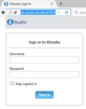

You may want to install IDE(Integrated Development Enviornment) for R, see below steps :
sudo wget https://download2.rstudio.org/rstudio-server-rhel-1.0.44-x86_64.rpm --no-check-certificate
sudo yum install rstudio-server-rhel-1.0.44-x86_64.rpm
sudo firewall-cmd --permanent --add-port=8787/tcp
sudo systemctl status rstudio-server.service
After installation, you can Sign in the browser with port 8787
hk.ulcert.uw.edu:8787
